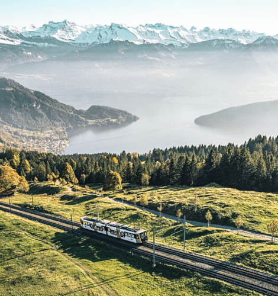
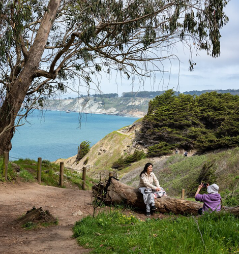
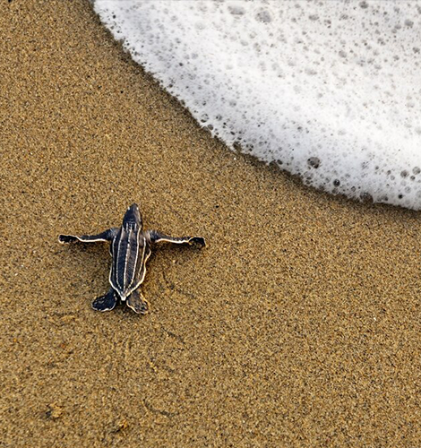
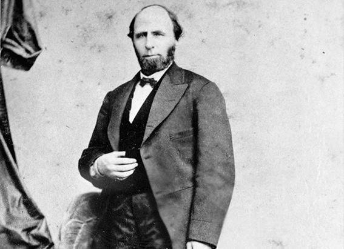
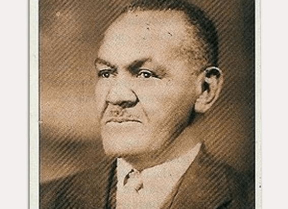

NATIONAL GEOGRAPHIC
5 trips to inspire the whole family in 2023
TRAVEL
- 
- 
- 
Switzerland
On any given day, Switzerland’s transit network carries 6.6 million riders in a country of only 8.7 million people. Vacationing families are tempted with unique trips on its famously punctual trains featuring spectacular mountains, classic cookies, and even a Wonka-esque chocolate tour.
A cookie train from Berne to Lucerne stops for a nibble at the Kambly bakery where kids can bake their own treats and design a biscuit tin to take home. A chocolate train departing from Montreux starts with chocolate croissants and hot cocoa served onboard, stops in Gruyères for its medieval old town and world-famous cheese, and winds up in Broc for a tour of the Maison Cailler chocolate factory.
Making it all sweeter is the Swiss Family Card, a rail pass that allows anyone under the age of 16 to ride either free or at a 50 percent discount. “The pass is convenient, and it allows for exploration on a whim,” says National Geographic family travel expert Heather Greenwood Davis. “Long-journey trains often offer a family car essentially a full playground on board and family zones where tables have built-in games to keep the fun going."
Colombia
Colombia’s boisterous birdlife is as colorful and melodic as Encanto, the hit Disney animated film set in this biodiverse South American country. More than 1,900 different birds (almost 20 percent of the world’s avian species) live here, making Colombia the richest roost for birdlife on the planet.
Where can families flock with them? The Northern Colombia Birding Trail, for birders both extreme and casual, explores the country’s range of habitats. Tours with the National Audubon Society use 4x4 vehicles to visit the Sierra Nevada de Santa Marta, the planet’s highest coastal mountain range; the less explored Perijá Mountains; and beach-blessed Tayrona National Park on the Caribbean coast. Visitors can spot species like the crested quetzal, Santa Marta parakeet, and the sickle-winged guan. Colombians and Wayuu Indigenous peoples work along the route as bird guides.
“Birdwatching, wildlife watching, and nature tourism in general can play a big role in conserving Colombia’s biodiversity and also in supporting the communities who live nearby,” says biologist and National Geographic Explorer Federico Pardo. “Wildlife tourism not only brings dollars to the economy, it also increases the appreciation for our plants, animals, and ecosystems.”
San Francisco, California
In San Francisco, city kids can learn that becoming a trail hiker doesn’t necessarily mean a trip into the wild. The recently completed Crosstown Trail meanders across the city diagonally, from its southeastern corner at Candlestick Point to its northwestern tip at Lands End, winding through gardens, up hills, and across urban streets for nearly 17 miles.
The path is “the fruit of volunteers’ labor ordinary San Franciscans coming together to define its route and, in some places, physically clearing paths in order to connect segments of existing trails,” writes Chaney Kwak, who has walked the entire length of the Crosstown Trail. “You might run into neighbors bragging about their fruit trees, and plucking pink apples to share.”
Manchester, United Kingdom
In 2023 Manchester, home to the renowned Manchester United Football Club, launches a number of attractions abetting its post-pandemic revival. The year’s centerpiece is the summer opening of Factory International, a new $225 million downtown cultural space designed by Rem Koolhaas’s architectural firm. Named partly after the local record label that made hometown bands Joy Division and New Order globally famous, the Factory will become the permanent home of the Manchester International Festival. The city’s biennial, cutting-edge arts jam showcases the best in theater, performance, and music for all ages.
The year also marks the reopening of the reimagined Manchester Museum, which features new galleries focused on Chinese, South Asian, and British Asian culture and an inclusive, family-focused “Belonging Gallery” that showcases how humans, plants, and animals thrive together. Also coming into its own is the National Trust’s new “sky park” on the Castlefield Viaduct, a walkable Victorian-era railroad bridge.
Trinidad and Tobago
Sea turtles survived the dinosaurs, but might not survive this century. Kids eager to help save the turtles and encounter hundreds of them as well can head to Trinidad and Tobago. With loggerheads, greens, leatherbacks, hawksbills, and olive ridleys five of the seven species of sea turtles swimming off its shores, this Caribbean nation is a mecca for turtle tourism.
Nesting sites are found on both islands, with leatherbacks the most numerous. During the nesting season from March to August, an estimated 6,000 to 10,000 turtles amass on the country’s shores. Trinidad’s Grande Riviere beach, on the island’s north coast, is the densest leatherback nesting ground in the world. “After 32 years, I’m still in awe of this gentle, magnificent creature,” says Suzan Lakhan Baptiste, managing director of Nature Seekers, a community-based organization that is dedicated to leatherback conservation and leads turtle-watching tours.
Comments :
- john Very good
- john Very good
Leave a Reply
Your email address will not be published. Required fields are marked*
Related posts:
-
$50 million fund to help amplify Black contributions to American history
African American historic landmarks have long been forgotten, neglected, and left in the dark. Spaces that have curated Black achievement, activism, and artistry traditionally have not received the same funding as other historic landmarks
View article -
This U.S. governor was impeached for cracking down on the KKK
A century and a half ago, North Carolina’s Ku Klux Klan was ascendant. Fueled by backlash to Reconstruction, groups of masked men roamed the state, terrorizing and murdering Black citizens and government officials opposed
View article -
Thousands lost everything in the Tulsa Race Massacre including my family
When I was in elementary school, my grandfather, Theron C. Toole, pulled me aside at his house. He said he needed to talk to me about something important: our family history. He told me about my great-great-great grandfather
View article